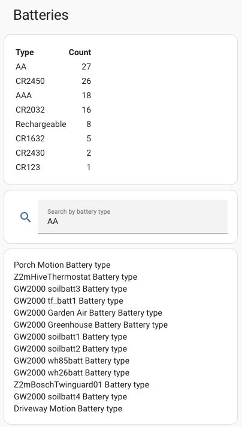

Community Contributions#
Dashboards#
Battery State Card#
Using the excellent Battery State Card by maxwroc you can easily display devices with their batteries required where the devices battery threshold indicates it's low and show be replaced.
type: custom:battery-state-card
secondary_info: "{attributes.battery_type_and_quantity}"
round: 0
filter:
include:
- name: entity_id
value: "*_battery_plus"
exclude:
- name: attributes.battery_low
value: false
bulk_rename:
- from: "Battery+"
sort:
- state
Get a markdown summary of your battery quantities#
This is from the excellent German blog Smart Live
The overview video is available on YouTube here
{% set ns_batteries = namespace(batteries={}) %}
{% for entity_id in integration_entities('battery_notes') if entity_id is search('_battery_type$', ignorecase=False) -%}
{% set battery_type = states[entity_id].state %}
{% set battery_split = battery_type.split('×') %}
{% if battery_split | length > 1 %}
{% set battery_type = battery_split[-1] | trim %}
{% set battery_count = battery_split[0] | int(1) %}
{% else %}
{% set battery_count = 1 %}
{% endif %}
{% if battery_type not in ns_batteries.batteries %}
{% set ns_batteries.batteries = dict(ns_batteries.batteries, **{battery_type: battery_count}) %}
{% else %}
{% set ns_batteries.batteries = dict(ns_batteries.batteries, **{battery_type: ns_batteries.batteries[battery_type] + battery_count}) %}
{% endif %}
{% endfor %} | Type | Count |
| :-- | --: |
{% for bt in ns_batteries.batteries | dictsort(False, 'value') | reverse -%}
| {{ bt[0] }} | {{ [bt][0][1] }} |
{% endfor %}
Search for devices with a particular battery#
Again from the excellent Smart Live
This requires creating a helper of type text called Battery search with a max length of 20, which you can then reference in the below yaml on a dashboard.
type: vertical-stack
cards:
- type: entities
entities:
- entity: input_text.battery_search
name: Search by battery type
icon: mdi:magnify
secondary_info: none
state_color: false
- type: markdown
content: |-
{% set search_term = states('input_text.battery_search') | upper | trim %}
{% if search_term != "" %}
{% set devices = states | selectattr('attributes.battery_type', 'defined')
| selectattr('entity_id', 'search', '_battery_type$') | list %}
{% if search_term | count < 7 %}
{% set matching_devices = devices | selectattr('attributes.battery_type', 'string')
| selectattr('attributes.battery_type', 'eq', search_term)
| map(attribute='name') | unique | list %}
{% else %}
{% set matching_devices = devices | selectattr('attributes.battery_type', 'string')
| selectattr('attributes.battery_type', 'search', search_term, ignorecase=true)
| map(attribute='name') | unique | list %}
{% endif %}
{% if matching_devices | length > 0 %}
{{ matching_devices | join('\n') }}
{% else %}
No devices with such battery type
{% endif %}
{% else %}
Search result
{% endif %}

Automations#
Battery Low Notification#
Raise a persistent notification when a battery is low, dismiss when it's not low
Note
Battery Threshold events are only raised when the device has a Battery+ entity or a Battery Low Template is added to the Battery Notes configuration.
alias: Battery Low Notification
description: Battery Low Notification with auto dismiss
mode: queued
triggers:
- trigger: event
event_type: battery_notes_battery_threshold
event_data:
battery_low: true
id: low
alias: Battery went low
- trigger: event
event_type: battery_notes_battery_threshold
event_data:
battery_low: false
id: high
alias: Battery went high
conditions: []
actions:
- choose:
- conditions:
- condition: trigger
id:
- low
sequence:
- action: persistent_notification.create
data:
title: |
{{ trigger.event.data.device_name }} Battery Low
notification_id: "{{ trigger.event.data.device_id }}-{{ trigger.event.data.source_entity_id }}"
message: >
The device has a battery level of {{
trigger.event.data.battery_level }}% {{ '\n' -}} You need {{
trigger.event.data.battery_quantity }}× {{
trigger.event.data.battery_type }}
- conditions:
- condition: trigger
id:
- high
sequence:
- action: persistent_notification.dismiss
data:
notification_id: "{{ trigger.event.data.device_id }}-{{ trigger.event.data.source_entity_id }}"
Check Battery Low daily reminder#
Call the check battery low action every day to raise events for those that are still low.
To be used in conjunction with a Battery Low Notification or similar.
alias: Daily Battery Low Check
description: Check whether a battery is low
mode: single
triggers:
- trigger: time
at: "09:00:00"
conditions: []
actions:
- action: battery_notes.check_battery_low
Check Battery Low weekly reminder#
Weekly reminders are a little trickier, you will need to create a Schedule Helper for when you want the battery check to occur then use this automation for when the helper is on.
Below I am referencing a schedule helper called maintenance which I have set to come on weekly.
To be used in conjunction with a Battery Low Notification or similar.
alias: Battery Low Check
description: Check whether a battery is low
mode: single
triggers:
- trigger: state
entity_id:
- schedule.maintenance
to: "on"
conditions: []
actions:
- action: battery_notes.check_battery_low
data: {}
Battery Replaced#
Mark a battery as replaced when there is an increase in battery level.
Note
Battery Increased events are only raised when the device has a Battery+ entity or a Battery Low Template is added to the Battery Notes configuration.
alias: Battery Replaced
description: Battery Replaced
mode: queued
triggers:
- trigger: event
event_type: battery_notes_battery_increased
conditions: []
actions:
- action: battery_notes.set_battery_replaced
data:
device_id: "{{ trigger.event.data.device_id }}"
source_entity_id: "{{ trigger.event.data.source_entity_id }}"
Send a notification when there is an increase in battery level.
alias: Battery Increased Notification
description: Battery Increased Notification
mode: queued
triggers:
- trigger: event
event_type: battery_notes_battery_increased
conditions: []
actions:
- action: persistent_notification.create
data:
title: |
{{ trigger.event.data.device_name }} Battery Increased
message: >
The device has increased its battery level, you probably want to mark it as replaced
Check Battery Last Reported Daily#
Call the check battery last reported action every day to raise events for those not reported in the last two days.
To be used in conjunction with a Battery Not Reported automation.
alias: Daily Battery Not Reported Check
description: Check whether a battery has reported
mode: single
triggers:
- platform: time
at: "09:00:00"
conditions: []
actions:
- action: battery_notes.check_battery_last_reported
data:
days_last_reported: 2
Battery Not Reported#
Respond to events raised by the check_battery_last_reported action and create notifications.
Info
Note this cannot be run manually as it examines event triggers, use it with the Check Battery Last Reported Daily or similar.
alias: Battery Not Reported
description: Battery not reported
mode: queued
max: 30
triggers:
- trigger: event
event_type: battery_notes_battery_not_reported
conditions: []
actions:
- action: persistent_notification.create
data:
title: |
{{ trigger.event.data.device_name }} Battery Not Reported
message: >
The device has not reported its battery level for {{
trigger.event.data.battery_last_reported_days }} days {{ '\n'
-}} Its last reported level was {{
trigger.event.data.battery_last_reported_level }}% {{ '\n' -}} You need
{{ trigger.event.data.battery_quantity }}× {{
trigger.event.data.battery_type }}
Check Battery Last Replaced - Response Variable#
This script can be used to call the check battery last replaced action and get a response for those not replaced in the last 365 days.
It then adds all devices to a todo list.
sequence:
- action: battery_notes.check_battery_last_replaced
data:
days_last_replaced: 365
raise_events: false
response_variable: response
- repeat:
for_each: "{{ response.get('check_battery_last_replaced', []) }}"
sequence:
- action: todo.add_item
metadata: {}
data:
item: >-
{{ repeat.item.device_name }} - {{
repeat.item.battery_type_and_quantity }}
target:
entity_id: todo.maintenance_list
alias: Add not replaced to maintenance list
description: ""
Check Battery Last Replaced Monthly - Raising Events#
Call the check battery last replaced action on the first of the month to raise events for those not replaced in the last 365 days.
To be used in conjunction with a Battery Not Replaced automation.
alias: Monthly Battery Not Replaced Check
description: Check when a battery was last replaced
mode: single
triggers:
- platform: template
value_template: "{{ now().day == 1 }}"
conditions: []
actions:
- action: battery_notes.check_battery_last_replaced
data:
days_last_replaced: 365
Battery Not Replaced#
Respond to events raised by the check_battery_last_replaced action and create notifications.
Info
Note this cannot be run manually as it examines event triggers, use it with the Check Battery Last Reported Daily or similar.
alias: Battery Not Replaced
description: Battery not replaced
mode: queued
max: 30
triggers:
- trigger: event
event_type: battery_notes_battery_not_replaced
conditions: []
actions:
- action: persistent_notification.create
data:
title: |
{{ trigger.event.data.device_name }} Battery Not Replaced
message: >
The device has not been replaced for {{
trigger.event.data.battery_last_replaced_days }} days {{ '\n'
-}} Its last replaced date was {{ trigger.event.data.battery_last_replaced
| as_timestamp | timestamp_custom('%Y-%m-%d', true)}} {{ '\n' -}} You need
{{ trigger.event.data.battery_quantity }}× {{ trigger.event.data.battery_type }}
Automation Tips#
To call the battery replaced action from an entity trigger you will need the device_id, here's an easy way to get this
actions:
- action: battery_notes.set_battery_replaced
data:
device_id: "{{ device_id(trigger.entity_id) }}"
Blueprints#
A collection of Blueprints are available here.
Contributing#
If you want to contribute then fork the repository, edit this page which is in the docs folder and submit a pull request.